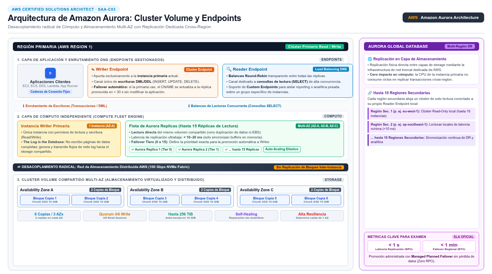

Amazon Aurora AWS managed MySQL and PostgreSQL
El "MySQL/PostgreSQL compatible" que separa el volumen de cómputo del storage: un cluster distribuido con 6 copias de datos en 3 AZs, hasta 256 TiB y réplicas que comparten el mismo almacenamiento.
Amazon Aurora es el motor relacional gestionado de AWS compatible con MySQL y PostgreSQL: tu código, drivers y herramientas existentes funcionan sin cambios, pero por debajo corre una arquitectura distinta a la de RDS clásico. La documentación oficial la describe como un motor que "automatiza y estandariza el clustering y la replicación" — típicamente lo más difícil de operar en un motor open source — y le atribuye hasta 6 veces el throughput de MySQL o PostgreSQL sin modificar sobre hardware similar. Aurora forma parte de la familia RDS: se crea y administra con las mismas consolas, CLI y API, y las operaciones rutinarias — patching, backup, detección de fallos — corren por el mismo carril gestionado.
La diferencia estructural está en el storage subsystem: en RDS clásico cada instancia tiene su volumen EBS y la réplica duplica todo; en Aurora, el almacenamiento es un cluster volume compartido por todas las instancias, que crece automáticamente hasta 256 TiB. La consecuencia de diseño es doble: escribir una vez es visible para todas las réplicas (la replicación es rapidísima porque no copia bloques entre instancias), y el cluster se separa en rol writer y roles reader, cada uno con sus endpoints. Esa separación compute/storage es exactamente el argumento que el examen espera cuando compara Aurora contra RDS Multi-AZ.

El storage distribuido: 6 copias en 3 AZs
El Aurora cluster volume guarda seis copias de cada bloque de datos repartidas en tres Availability Zones — dos copias por AZ. Esa redundancia granular habilita la auto-reparación: ante la corrupción de un bloque, Aurora lo reconstruye desde las otras copias sin intervención ni downtime, y la pérdida de una AZ completa degrada la redundancia sin perder disponibilidad. El volumen crece en incrementos según necesitas, hasta el máximo de 256 TiB documentado, y solo pagas por lo que consumes — no aprovisionas storage por adelantado. Para el examen, esta es la respuesta de "how does Aurora achieve its durability": no es una standby que copia datos, es un almacenamiento distribuido del que beben todas las instancias.
Sobre ese volumen, el DB cluster se organiza como una instancia writer (a la vez que puede haber más writers en Aurora Multi-Master, caso raro) y hasta 15 Aurora replicas que sirven lecturas. Si la writer falla, Aurora promueve una réplica en segundos — o crea una nueva si no hay — y el cluster endpoint (writer endpoint) sigue apuntando a la instancia correcta: la aplicación no reescribe su cadena de conexión. El reader endpoint balancea las lecturas entre todas las réplicas disponibles, y existen custom endpoints para agrupar réplicas por uso (p. ej. reporting sobre réplicas grandes). Es el mismo patrón endpoint de RDS Proxy, pero nativo del engine.
Aurora Serverless: pagar por ACUs usadas
Aurora Serverless elimina el dimensionamiento de instancias: la capacidad se mide en Aurora Capacity Units (ACUs) y el cluster escala automáticamente las ACUs según la demanda, pagando por segundo de capacidad consumida. El caso de examen clásico es el workload impredecible o intermitente — una app interna con picos esporádicos, entornos de prueba que se usan a ratos — donde aprovisionar instancias fijas es caro. La generación v1 soporta pausar el cluster y reanudarlo al primer request (escala hasta cero); la v2 mantiene el cluster activo y escala de forma continua y casi instantánea, y es la opción por defecto para nuevas cargas serverless. La clave comparativa: RDS clásico te vende instancias; Aurora Serverless te vende capacidad elástica de base de datos relacional.
Aurora Global Database: replicación entre regiones
Cuando el requisito es global — DR ante la pérdida de una región entera, o lecturas de baja latencia en varios continentes — aparece Aurora Global Database: un cluster primario en una región recibe las escrituras, y hasta 10 clusters secundarios de solo lectura en otras regiones se sincronizan con infraestructura dedicada, con una latencia de replicación típicamente inferior a un segundo según la documentación oficial. Los clusters secundarios sirven lecturas locales — las aplicaciones de cada región leen cerca — y el Global writer endpoint siempre apunta al cluster primario, incluso después de un switchover planificado o un failover de emergencia, de modo que las escrituras no requieren reconfiguración de la aplicación.
La distinción de examen es importante frente a alternativas: una cross-region read replica de RDS clásico replica por mecanismos del motor y puede promocionarse manualmente, pero Global Database ofrece una recuperación de región integrada — promover un secundario es una operación gestionada — y latencias de replicación de sub-segundo dedicadas. Si el enunciado mezcla "database must survive the loss of an entire Region" con "global reads with local latency", Aurora Global Database es la respuesta canónica.
recibe escrituras"] end subgraph SE["Regiones secundarias — hasta 10"] SC1["Cluster secundario
lecturas locales"] SC2["Cluster secundario
lecturas locales"] end GWE["Global writer endpoint"] -.->|"apunta al primario"| PC PC -->|"replicación dedicada
latencia sub-segundo"| SC1 PC -->|"replicación dedicada"| SC2 classDef navy fill:#EFF6FF,stroke:#3B82F6,stroke-width:2px,color:#1E293B classDef green fill:#F0FDF4,stroke:#10B981,stroke-width:2px,color:#1E293B classDef amber fill:#FFF7ED,stroke:#F59E0B,stroke-width:2px,color:#1E293B class PC,GWE navy class SC1,SC2 green
| Dimensión | RDS clásico | Amazon Aurora |
|---|---|---|
| Compatibilidad | Motores MySQL, PostgreSQL, MariaDB, Oracle, SQL Server, Db2 | Solo MySQL y PostgreSQL compatibles |
| Storage | EBS por instancia, aprovisionado | Cluster volume compartido, crece hasta 256 TiB |
| Durabilidad del dato | Standby con copia síncrona | 6 copias en 3 AZs auto-reparables |
| Escalado de lecturas | Read replicas asíncronas, hasta 15 | Hasta 15 réplicas que comparten el volumen |
| Endpoints | Endpoint de instancia | Writer, reader y custom endpoints |
| Elasticidad | Resize de instancia | Serverless con ACUs por segundo |
| Global | Cross-region read replica | Global Database: 1 primario + hasta 10 secundarios |
| Endpoint | A qué apunta | Uso de la aplicación |
|---|---|---|
| Writer / cluster endpoint | La instancia primaria actual | Todas las escrituras; sobrevive al failover |
| Reader endpoint | Balanceo entre réplicas de lectura | Consultas de lectura escalables |
| Custom endpoint | Subconjunto de instancias que eliges | Aislar reporting o réplicas específicas |
| Instance endpoint | Una instancia concreta | Conexión directa a casos especiales |
| Global writer endpoint | El cluster primario de la global database | Escrituras tras switchover o failover |
- Aurora es compatible con MySQL y PostgreSQL, hasta 6x el throughput de los motores base.
- El storage es un cluster volume compartido: 6 copias en 3 AZs, auto-reparable, hasta 256 TiB.
- Writer y reader endpoints separados; hasta 15 réplicas de lectura; failover en segundos.
- Aurora Serverless escala en ACUs con facturación por segundo: para workloads intermitentes o impredecibles.
- Global Database: 1 región primaria + hasta 10 secundarias, replicación sub-segundo por infraestructura dedicada.
- El Global writer endpoint sobrevive a switchovers y failovers sin reconfigurar apps.
- DB-05 Amazon Aurora — Overview (compatibility, storage model, clustering) · docs.aws.amazon.com/AmazonRDS/latest/AuroraUserGuide/CHAP_AuroraOverview.html
- DB-06 Aurora Serverless (ACUs, pay per use, v1/v2) · docs.aws.amazon.com/AmazonRDS/latest/AuroraUserGuide/aurora-serverless.html
- DB-07 Aurora Global Database (cross-region DR, secondary clusters) · docs.aws.amazon.com/AmazonRDS/latest/AuroraUserGuide/aurora-global-database.html